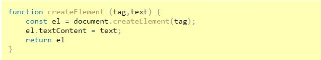

Week 03 Notes
Article - Object Methods: this
- Remember: " this " is not bound; it does not depend on where method is declared only what object is
before " . "
- arrow functions have no " this ", when referenced, it will be taken from outside function
Reading Ch5: Objects
- Object Literals: great for creating objects quickly without having to define a class
- all properties/methods in single { }
- each property is a key-value pair, comma seperated
- can serve as namespace to prevent naming collisions (reusing a variable name by mistake)
- add new properties by assigning new value with dot notation, but remember they won't always appear in the order entered.
- Objects can be passed as parameters, argument order doesn't have to be exactly the same
- JSON - looks similar to object literal but has important differences:
- property name must be double-quoted
- cannot use functions as values!
- .parse() converts string data in JSON to JS object
- .stringify() takes JS object and returns JSON data *will ignore functions
- JavaScript Math Object reference @ w3schools
- JavaScript Date Object reference @ w3schools
- moment.js library
- JavaScript RegExp reference @ w3schools
Reading Ch6: Document Object Model
- Node lists are like arrays in the way you can use index notation but they do NOT support array methods(ie: slice, splice, join)
- you can convert to an array with Array.from() or spread operator [...]
- .querySelector or .querySelectorAll can be very powerful and precise when used with CSS notation & psueudo-selectors
- function example for creating elements:

- alternative to changing css style on an element is to add a class to it that reflects desired css change
Reading Ch7: Events
- events go with functions; will not be executed until event occurs(use page load if you don't want to wait for user)
- touch events are cool, but be careful using them
- Event Handler reference @ w3schools